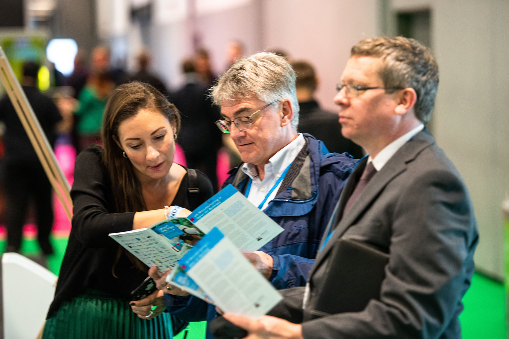
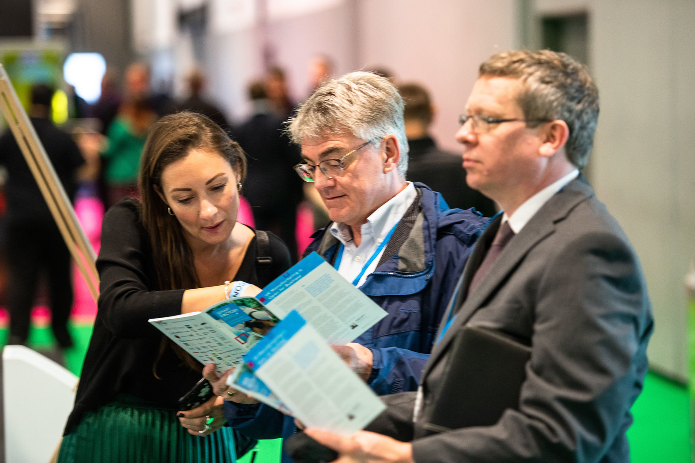

Summary
Event branding for Europe's biggest annual manufacturing exhibition held in Exhibition Centre Liverpool.
A typographic system based on a hinge/pivot system was created to reinforce the shows manufacturing and engineering spirit. The system later developed in to a series of icons which were rolled out over hanging banners, voiles, topic bins, lecterns and show guide.
 
